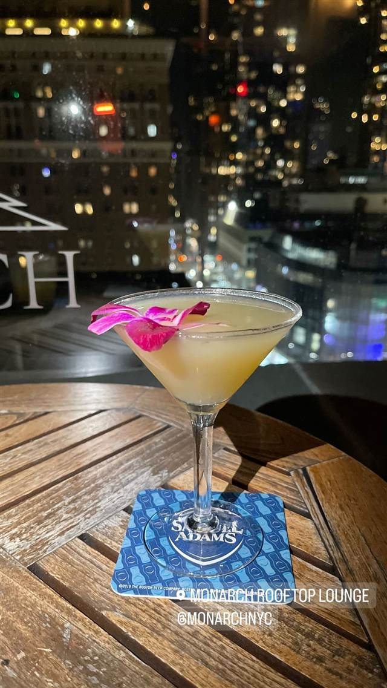

バー · ルーフトップ・ラウンジ · ノマド
230 Fifth Rooftop Bar
約1000人収容、NY最大級の屋外ルーフトップガーデンで飲む一杯
230 FIFTH: BEST HEATED ROOFTOP BAR/CLU...
2006年開業、フラットアイアン地区の1914年建築のビル屋上にあるルーフトップバー。約1000人を収容できるニューヨーク最大級の屋外ルーフトップガーデンを持ち、冬は暖房付きの「イグルー」で通年営業する。
TRIVIA
豆知識
- 屋上テラスの座席数は約1000人分あり、ニューヨーク最大級の屋外ルーフトップガーデンとされる
- 入居するビルは1914年建築のボザール様式で、フラットアイアン地区にある
REVIEWS
世間の評判
3.2Googleマップ
マンハッタンを望む屋上の絶景
- マンハッタンやエンパイアステートビルの絶景を評価する声が多い
- カクテルや料理の味と丁寧で親切な接客を評価する声が多く見られる
- 混雑時はエレベーターや注文の順番待ちの行列ができるという声が多い
- ドリンクや飲食の値段が高めで非常に割高だと感じる人が複数いる
Tripadvisor・Yelp 口コミ4500件
| 創業 | 2006年5月4日オープン |
|---|---|
| 看板 | ルーフトップガーデンでのカクテル、冬季限定の暖房付き「イグルー」席 |
| どこから | 海外 |
| 行くなら | 行列 |
| 場所 | 28th St 1150 Broadway, New York, NY 10001 |
| メモ | 屋上テラスは約1000人収容でニューヨーク最大級の屋外ルーフトップガーデンとされる。冬もイグルーやヒーターで通年営業 |
食べたもの：ルーフトップバーのカクテル
NEARBY
近い店・同じ系統の店
-
 ルーフトップ・ラウンジ 麻布十番
茶房 HISAYA LOUNGE 東京麻布十番店
京都・清水寺参道発、丹波栗を使った出来立て京モンブラン
昼 ¥2,000～¥2,999 夜 ¥2,000～¥2,999
ルーフトップ・ラウンジ 麻布十番
茶房 HISAYA LOUNGE 東京麻布十番店
京都・清水寺参道発、丹波栗を使った出来立て京モンブラン
昼 ¥2,000～¥2,999 夜 ¥2,000～¥2,999
- 写真なし ルーフトップ・ラウンジ 六本木一丁目 The Lovers' Lounge 麻布台ヒルズ開業と同時に生まれた日本産ウイスキーのラウンジ 昼 ¥3,000～¥3,999 夜 ¥5,000～¥5,999
-
 ルーフトップ・ラウンジ 藤沢駅南口徒歩2分
カフェダイニング 8LOUNGE(エイトラウンジ)藤沢
アメリカ製ヴィンテージトレーラーのエアストリームを個室として使える
夜 ¥2,000～¥2,999
ルーフトップ・ラウンジ 藤沢駅南口徒歩2分
カフェダイニング 8LOUNGE(エイトラウンジ)藤沢
アメリカ製ヴィンテージトレーラーのエアストリームを個室として使える
夜 ¥2,000～¥2,999
-
 ルーフトップ・ラウンジ 県庁前駅
Southwest Grand Hotel 那覇 国際通り
那覇市街と夕景を望む屋上のグリルダイニング&サンセットバー
ルーフトップ・ラウンジ 県庁前駅
Southwest Grand Hotel 那覇 国際通り
那覇市街と夕景を望む屋上のグリルダイニング&サンセットバー
-
 ルーフトップ・ラウンジ 34丁目-ハラルドスクエア駅
Top of the Strand Rooftop Bar
開閉式ガラス屋根の下エンパイア・ステート・ビルを望むバー
ルーフトップ・ラウンジ 34丁目-ハラルドスクエア駅
Top of the Strand Rooftop Bar
開閉式ガラス屋根の下エンパイア・ステート・ビルを望むバー
-

ルーフトップ・ラウンジ 34th St-Herald Sq Monarch Rooftop 18階のペントハウスに広がる465平米の空間から望む眺望